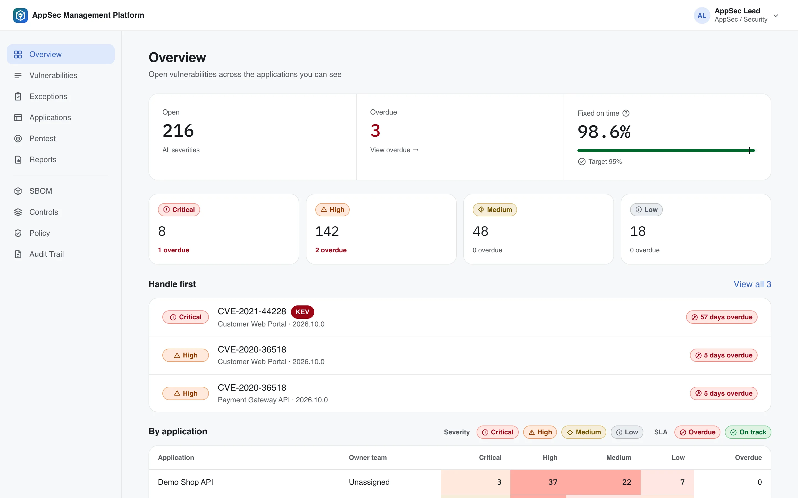
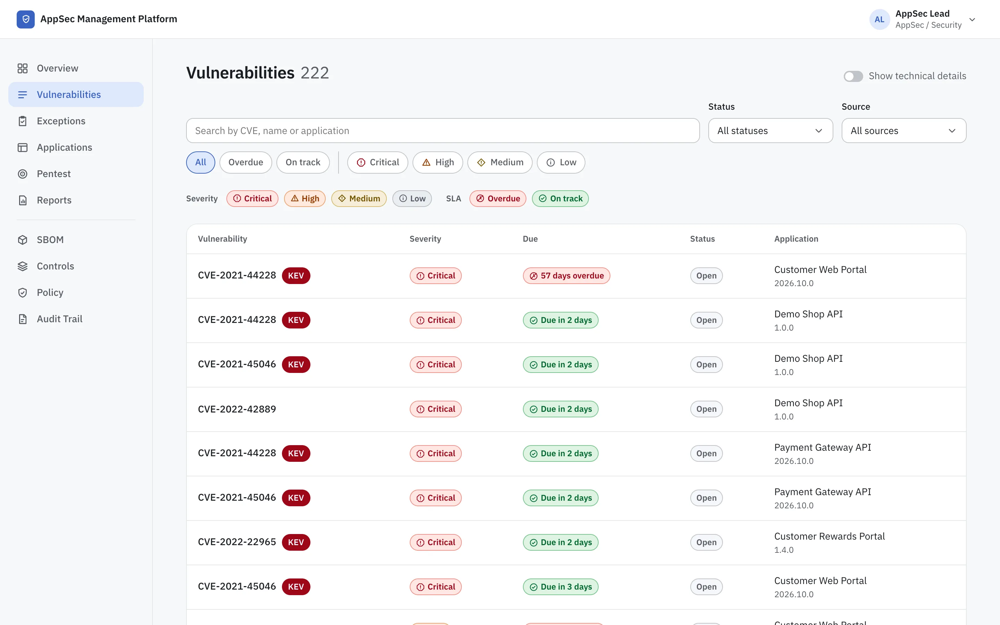

SBOM inventory
Pulls projects, components and findings from OWASP Dependency-Track, enriched with CISA KEV, FIRST EPSS and OSV aliases. Vendor SBOMs can be uploaded by hand.
Open source · Self-hosted · Apache-2.0
One place for your application inventory, open-source vulnerabilities from SBOMs, SLA tracking, risk exceptions with maker–checker approval, and the evidence your auditors ask for.

Built for AppSec teams, developers, managers and auditors. Each role sees only what it needs.
Pulls projects, components and findings from OWASP Dependency-Track, enriched with CISA KEV, FIRST EPSS and OSV aliases. Vendor SBOMs can be uploaded by hand.
The clock starts when a vulnerability first appears in an application and keeps running across releases, so a new build never buys extra time.
Risk acceptance, false positive and not-affected requests with reference numbers, approval by severity (L1–L3), residual severity backed by a control library, and expiry.
Which version ran where and when, the scan and SBOM hash behind it, who approved each exception, and every bypass at the upstream tool, exported in one pack.
CVSS, EPSS and KEV rules decide the tier. Policy versions are effective-dated and never edited, so every past decision can be reproduced.
Open, found, fixed, on-time rate, top risks and exceptions for any month, per organisation or team. Print or save as PDF.
Sign in with Microsoft (OIDC + PKCE), SCIM provisioning, and roles from Entra groups or app roles. A local break-glass admin stays available.
Pentest projects and cost reporting, Jira ticket routing by severity, a go-live checklist, an append-only audit trail, light and dark themes.
Real screens from the demo data. Switch the page language to see the Thai interface.

Your pipeline sends the SBOM to Dependency-Track and records the deployment.
Findings are tiered by policy, grouped per issue and given an SLA.
Developers plan the fix or request an exception; AppSec and management approve.
Reports for leadership, evidence packs for auditors, all from the same data.
Needs Docker. The dev stack includes Dependency-Track and demo data.
git clone https://github.com/nongkon09/AppSec_Management.git
cd AppSec_Management
docker compose -f docker-compose.dev.yml up -d
docker compose -f docker-compose.dev.yml exec backend \
python -m app.seed --democd deploy/production
./scripts/install.sh --host appsec.example.orgLicensed under Apache-2.0. Issues and pull requests are welcome.